8.2 Infinite Impulse Response (IIR) Filter Design
Digital Signal Processing
Imron Rosyadi
8.3–8.5: Butterworth & Chebyshev Filters, Cascade Design, Audio Equalizer
Learning Objectives
By the end of this session, you should be able to:
- Explain what a lowpass prototype is and why it is central to IIR filter design.
- Use the passband/stopband specifications to compute filter order for Butterworth and Chebyshev type I.
- Apply frequency transformations (LP→LP, LP→HP, LP→BP, LP→BS) and the bilinear transform (BLT) to get a digital IIR filter.
- Interpret MATLAB‑style design workflows for lowpass, highpass, bandpass, bandstop examples.
- Understand how to build higher‑order IIR filters using a cascade of biquads.
- Relate IIR filter banks to a practical digital audio equalizer.
Motivation: Why Butterworth & Chebyshev IIR Filters?
Real‑world ECE tasks need sharp frequency selection with low computational cost.
IIR filters can approximate analog designs (RC, RLC filters, op‑amp filters) very efficiently.
Butterworth and Chebyshev type I are two classical “workhorse” families:
- Butterworth: maximally flat in passband.
- Chebyshev: equiripple passband, sharper roll‑off for the same order.
Typical uses:
- Anti‑aliasing / reconstruction filters (analog, then digitized via BLT).
- Communications channel shaping.
- Audio equalization and tone control.
Big Picture Design Flow (BLT‑Based IIR Design)
8.3.1 Lowpass Prototype Functions
Idea: Design one normalized lowpass filter (prototype) with:
- Normalized passband edge: \(\nu_p = 1\)
- Specified passband ripple \(A_p\) (e.g., 3 dB, 0.5 dB, 1 dB)
- Minimal order \(n\) that also satisfies stopband attenuation \(A_s\) at \(\nu_s\)
Then:
- Transform this prototype to the desired analog filter shape (LP/HP/BP/BS).
- Convert analog \(H(s)\) → digital \(H(z)\) using BLT.
Butterworth Lowpass Prototype
Butterworth magnitude response (normalized lowpass):
\[ \left|H_P(\nu)\right| = \frac{1}{\sqrt{1 + \varepsilon^{2}\nu^{2n}}} \]
- \(\nu\): normalized frequency (prototype domain).
- \(n\): filter order.
- \(\varepsilon\): ripple parameter (for Butterworth with 3 dB spec, \(\varepsilon = 1\)).
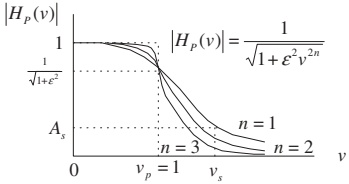
Butterworth Prototype Transfer Functions (3 dB)
From Table 8.3 (\(\varepsilon = 1\)):
| \(n\) | \(H_P(s)\) |
|---|---|
| 1 | \(\dfrac{1}{s+1}\) |
| 2 | \(\dfrac{1}{s^{2}+1.4142s+1}\) |
| 3 | \(\dfrac{1}{s^{3}+2s^{2}+2s+1}\) |
| 4 | \(\dfrac{1}{s^{4}+2.6131s^{3}+3.4142s^{2}+2.6131s+1}\) |
| 5 | \(\dfrac{1}{s^{5}+3.2361s^{4}+5.2361s^{3}+5.2361s^{2}+3.2361s+1}\) |
| 6 | \(\dfrac{1}{s^{6}+3.8637s^{5}+7.4641s^{4}+9.1416s^{3}+7.4641s^{2}+3.8637s+1}\) |
Tip
For low orders (1–6), it is common to pick \(H_P(s)\) from a table rather than factor everything by hand.
Computing Butterworth Order from Specs
Given:
- Passband ripple \(A_p\) (dB).
- Stopband attenuation \(A_s\) (dB).
- Normalized edges: \(\nu_p = 1\), \(\nu_s\) from Table 8.6.
We use:
Passband ripple:
\[ A_p\text{ dB} = -20\log_{10}\left(\frac{1}{\sqrt{1+\varepsilon^2}}\right) \]
Stopband attenuation:
\[ A_s\text{ dB} = -20\log_{10}\left(\frac{1}{\sqrt{1+\varepsilon^2\nu_s^{2n}}}\right) \]
Solving:
\[ \varepsilon^{2} = 10^{0.1A_p} - 1 \]
\[ n \ge \frac{ \log_{10}\left(\dfrac{10^{0.1A_s}-1}{\varepsilon^{2}}\right) }{ 2\log_{10}(\nu_s) } \]
Important
In practice, after computing \(n\) you always round up to the nearest integer to satisfy specs.
Chebyshev Type I Prototype (Equiripple)
Chebyshev LP prototype magnitude:
\[ \left|H_P(\nu)\right| = \frac{1}{\sqrt{1 + \varepsilon^{2} C_n^{2}(\nu)}} \]
where the (hyperbolic) Chebyshev function is:
\[ C_n(\nu) = \cosh\bigl[n \cosh^{-1}(\nu)\bigr],\quad \cosh^{-1}(x) = \ln\left(x + \sqrt{x^2 - 1}\right) \]
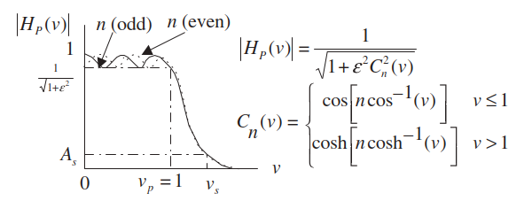
Key properties:
- Ripple in passband, monotonic stopband.
- Odd \(n\): DC gain is 1.
- Even \(n\): DC gain is \(1/\sqrt{1 + \varepsilon^2}\).
- Gain at cutoff \(\nu_p=1\) is \(1/\sqrt{1+\varepsilon^2}\) in both cases.
Chebyshev Prototype Functions (Tables)
0.5 dB ripple (\(\varepsilon = 0.3493\)) – Table 8.4 (excerpt):
| \(n\) | \(H_P(s)\) |
|---|---|
| 1 | \(\dfrac{2.8628}{s + 2.8628}\) |
| 2 | \(\dfrac{1.4314}{s^{2} + 1.4256s + 1.5162}\) |
| 3 | \(\dfrac{0.7157}{s^{3} + 1.2529s^{2} + 1.5349s + 0.7157}\) |
1 dB ripple (\(\varepsilon = 0.5088\)) – Table 8.5 (excerpt):
| \(n\) | \(H_P(s)\) |
|---|---|
| 1 | \(\dfrac{1.9652}{s + 1.9652}\) |
| 2 | \(\dfrac{0.9826}{s^{2} + 1.0977s + 1.1025}\) |
| 3 | \(\dfrac{0.4913}{s^{3} + 0.9883s^{2} + 1.2384s + 0.4913}\) |
Computing Chebyshev Order from Specs
Given:
- Passband ripple \(A_p\) (dB), stopband attenuation \(A_s\) (dB).
- Normalized edges: \(\nu_p = 1\) and \(\nu_s\) from Table 8.6.
Similar to Butterworth,
\[ A_p\text{ dB} = -20\log_{10}\left(\frac{1}{\sqrt{1+\varepsilon^{2}}}\right) \quad\Rightarrow\quad \varepsilon^{2} = 10^{0.1A_p} - 1 \]
Stopband condition:
\[ A_s\text{ dB} = -20\log_{10}\left(\frac{1}{\sqrt{1+\varepsilon^{2}C_n^{2}(\nu_s)}}\right) \]
Solving for \(n\):
\[ n \ge \frac{ \cosh^{-1}\left[ \left(\dfrac{10^{0.1A_s}-1}{\varepsilon^{2}}\right)^{0.5} \right] }{ \cosh^{-1}(\nu_s) } \]
where \(\cosh^{-1}(x) = \ln(x + \sqrt{x^2 - 1})\).
From Analog Specs to Prototype Specs
We must convert analog frequency specs \((\omega_{ap}, \omega_{as}, \dots)\) to prototype normalized frequencies.
Table 8.6 gives:
| Filter | Given analog specs | Prototype specs |
|---|---|---|
| Lowpass | \(\omega_{ap}, \omega_{as}\) | \(\nu_p = 1,\ \nu_s = \omega_{as}/\omega_{ap}\) |
| Highpass | \(\omega_{ap}, \omega_{as}\) | \(\nu_p = 1,\ \nu_s = \omega_{ap}/\omega_{as}\) |
| Bandpass | \(\omega_{apl}, \omega_{aph}, \omega_{asl}, \omega_{ash}, \omega_0\) | \(\nu_p = 1,\ \nu_s = \dfrac{\omega_{ash}-\omega_{asl}}{\omega_{aph}-\omega_{apl}}\) |
| Bandstop | same parameters as bandpass | same \(\nu_s\) formula |
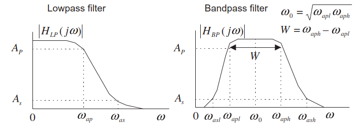
Example 8.7 – Lowpass Butterworth via BLT
Goal:
Design a digital lowpass Butterworth filter with:
- 3‑dB attenuation at \(f_p = 1.5\) kHz.
- 10‑dB attenuation at \(f_s = 3\) kHz.
- Sampling frequency \(f_s = 8000\) Hz.
Example 8.7 – Step 1: Prewarping
Digital radian frequencies:
\[ \omega_{dp} = 2\pi(1500) = 3000\pi\ \text{rad/s} \]
\[ \omega_{ds} = 2\pi(3000) = 6000\pi\ \text{rad/s} \]
Sampling period:
\[ T = \frac{1}{8000}\ \text{s} \]
Apply prewarping:
\[ \omega_{ap} = \frac{2}{T}\tan\left(\frac{\omega_{dp} T}{2}\right) = 16{,}000 \tan\left(\frac{3000\pi/8000}{2}\right) \approx 1.0691\times 10^{4}\ \text{rad/s} \]
\[ \omega_{as} = \frac{2}{T}\tan\left(\frac{\omega_{ds} T}{2}\right) = 16{,}000 \tan\left(\frac{6000\pi/8000}{2}\right) \approx 3.8627\times 10^{4}\ \text{rad/s} \]
Example 8.7 – Step 2: Prototype Specs and Order
From Table 8.6 for lowpass:
\[ \nu_p = 1,\quad \nu_s = \frac{\omega_{as}}{\omega_{ap}} = \frac{3.8627\times10^{4}}{1.0691\times10^{4}} = 3.6130 \]
Given:
- Passband ripple \(A_p = 3\) dB (Butterworth 3 dB prototype).
- Stopband attenuation \(A_s = 10\) dB.
Compute:
\[ \varepsilon^{2} = 10^{0.1 \times 3} - 1 = 10^{0.3} - 1 \approx 1 \]
Order:
\[ n = \frac{\log_{10}(10^{0.1\times 10}-1)}{2\log_{10}(3.6130)} \approx 0.8553 \]
So choose \(n = 1\).
From Table 8.3:
\[ H_P(s) = \frac{1}{s+1} \]
Example 8.7 – Step 3: LP→LP and BLT
Analog LP (scale cutoff to \(\omega_{ap}\)):
\[ H(s) = H_P\left(\frac{s}{\omega_{ap}}\right) = \frac{1}{\frac{s}{\omega_{ap}} + 1} = \frac{\omega_{ap}}{s + \omega_{ap}} = \frac{1.0691\times10^4}{s + 1.0691\times10^4} \]
Apply BLT, \(s = \frac{2}{T}\frac{z-1}{z+1} = 16000\frac{z-1}{z+1}\):
\[ H(z) = \frac{1.0691\times10^4}{16000\frac{z-1}{z+1} + 1.0691\times10^4} \]
Divide numerator and denominator by 16000:
\[ H(z) = \frac{0.6682}{\frac{z-1}{z+1} + 0.6682} \]
Multiply by \((z+1)\):
\[ H(z) = \frac{0.6682(z+1)}{(z-1) + 0.6682(z+1)} = \frac{0.6682z + 0.6682}{1.6682z - 0.3318} \]
Write in \(z^{-1}\) form:
\[ H(z) = \frac{0.4006 + 0.4006z^{-1}}{1 - 0.1989z^{-1}} \]
This is a first‑order IIR digital LP filter.
Example 8.7 – MATLAB Implementation
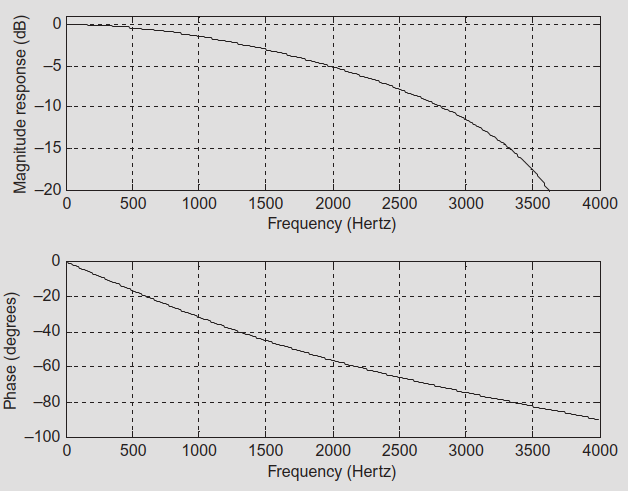
Example 8.8 – Highpass Chebyshev (Order Given)
Specs:
- First‑order highpass Chebyshev type I.
- Cutoff at 3 kHz, ripple \(A_p = 1\) dB.
- Sampling frequency 8 kHz.
Example 8.8 – Key Steps
Prewarp the cutoff:
\[ \omega_d = 2\pi \cdot 3000 = 6000\pi,\quad T = 1/8000 \]
\[ \omega_a = \frac{2}{T}\tan\left(\frac{\omega_d T}{2}\right) = 16{,}000 \tan\left(\frac{6000\pi/8000}{2}\right) \approx 3.8627\times 10^4\ \text{rad/s} \]
Order is given: \(n=1\). Use Table 8.5 (1 dB ripple):
\[ H_P(s) = \frac{1.9652}{s + 1.9652} \]
LP→HP transformation:
\[ H(s) = H_P\left(\frac{\omega_a}{s}\right) = \frac{1.9652 s}{1.9652 s + \omega_a} \]
Divide by 1.9652:
\[ H(s) = \frac{s}{s + 1.9656\times 10^4} \]
Apply BLT → digital HP:
\[ H(z) = \frac{s}{s + 1.9656\times 10^4} \Bigg|_{s=16000\frac{z-1}{z+1}} \]
After algebra:
\[ H(z) = \frac{0.4487 - 0.4487 z^{-1}}{1 + 0.1025 z^{-1}} \]
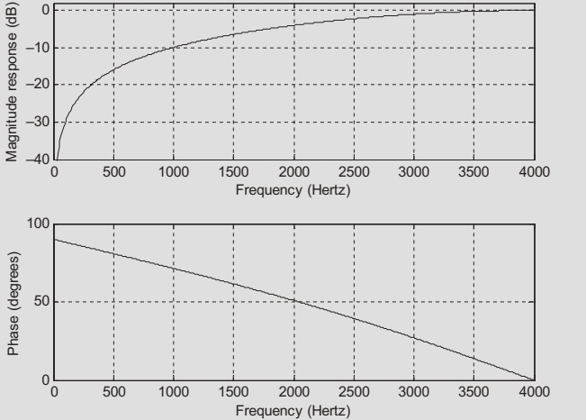
Example 8.9 – Second‑Order Lowpass Butterworth
Specs:
- Second‑order LP Butterworth.
- Cutoff 3.4 kHz, \(f_s = 8000\) Hz.
Example 8.9 – Outline
Prewarp digital cutoff:
\[ \omega_d = 2\pi(3400) = 6800\pi,\quad T = 1/8000 \Rightarrow \omega_a \approx 6.6645\times 10^4\ \text{rad/s} \]
Order given \(n=2\). Use Table 8.3:
\[ H_P(s) = \frac{1}{s^2 + 1.4142s + 1} \]
LP→LP scaling:
\[ H(s) = H_P\left(\frac{s}{\omega_a}\right) = \frac{4.4416\times 10^9}{s^2 + 9.4249\times 10^4 s + 4.4416\times 10^9} \]
Apply BLT:
\[ H(z) = \text{(after algebra)} = \frac{0.7157 + 1.4314z^{-1} + 0.7151z^{-2}} {1 + 1.3490z^{-1} + 0.5140z^{-2}} \]
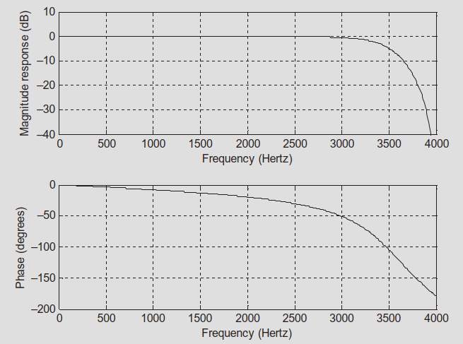
Example 8.10 – Highpass Chebyshev (Order from Specs)
Specs:
- Highpass Chebyshev type I.
- Passband: 0.5 dB ripple at 3 kHz.
- Stopband: 25 dB at 1 kHz.
- \(f_s = 8000\) Hz.
We now solve for order \(n\) using Chebyshev formulas.
Example 8.10 – Steps (Condensed)
Prewarp:
\[ \omega_{dp} = 6000\pi,\ \omega_{ds} = 2000\pi,\ T = 1/8000 \]
\[ \omega_{ap} \approx 3.8627\times 10^4,\quad \omega_{as} \approx 6.6274\times 10^3 \]
For highpass, Table 8.6 says:
\[ \nu_s = \frac{\omega_{ap}}{\omega_{as}} \approx 5.8284 \]
Compute:
\[ \varepsilon^2 = 10^{0.1 \times 0.5} - 1 \approx 0.1220 \]
\[ \frac{10^{0.1\cdot 25} - 1}{\varepsilon^2} \approx 2583.8341 \]
\[ n = \frac{\cosh^{-1}\left[(2583.8341)^{0.5}\right]}{\cosh^{-1}(5.8284)} \approx 1.8875 \Rightarrow n = 2 \]
Choose Chebyshev prototype from Table 8.4 (\(n=2\), 0.5 dB ripple):
\[ H_P(s) = \frac{1.4314}{s^2 + 1.4256s + 1.5162} \]
LP→HP transform, then BLT →
\[ H(z) = \frac{0.1327 - 0.2654z^{-1} + 0.1327z^{-2}} {1 + 0.7996z^{-1} + 0.3618z^{-2}} \]
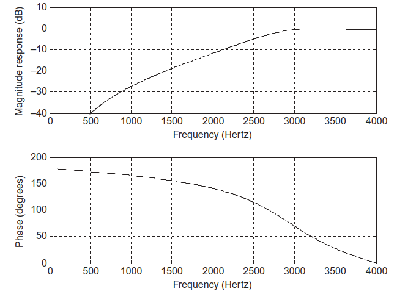
Bandpass / Bandstop Design Strategy
For BP and BS filters:
Prewarp all relevant digital edges to analog.
Match them to bandpass / bandstop analog specs \((\omega_{apl}, \omega_{aph}, \omega_{asl}, \omega_{ash}, \omega_0)\) and compute prototype \(\nu_s\).
Solve for order \(n\) (Butterworth or Chebyshev).
Use LP→BP or LP→BS formulas:
LP→BP: \(s \rightarrow \dfrac{s^2 + \omega_0^2}{Ws}\)
LP→BS: \(s \rightarrow \dfrac{W s}{s^2 + \omega_0^2}\)
Apply BLT to get digital \(H(z)\).
Example 8.11 – Bandpass Butterworth
Specs:
- Second‑order digital BP Butterworth.
- Lower cutoff 2.4 kHz, upper cutoff 2.6 kHz.
- \(f_s = 8000\) Hz.
Example 8.11 – Key Computations
Digital freqs:
\[ \omega_h = 2\pi(2600),\quad \omega_l = 2\pi(2400),\quad T = 1/8000 \]
Prewarp:
\[ \omega_{ah} \approx 2.6110\times10^4,\quad \omega_{al} \approx 2.2022\times10^4 \]
\[ W = \omega_{ah}-\omega_{al} = 4088\ \text{rad/s} \]
\[ \omega_0^2 = \omega_{ah}\omega_{al} \approx 5.7499\times 10^8 \]
Use 1st‑order prototype from Table 8.3 (\(H_P(s) = 1/(s+1)\)) so BP filter is order 2:
LP→BP transform:
\[ H(s) = \frac{W s}{s^2 + W s + \omega_0^2} = \frac{4088 s}{s^2 + 4088 s + 5.7499\times10^8} \]
BLT:
\[ H(z) = \frac{0.0730 - 0.0730 z^{-2}}{1 + 0.7117 z^{-1} + 0.8541 z^{-2}} \]
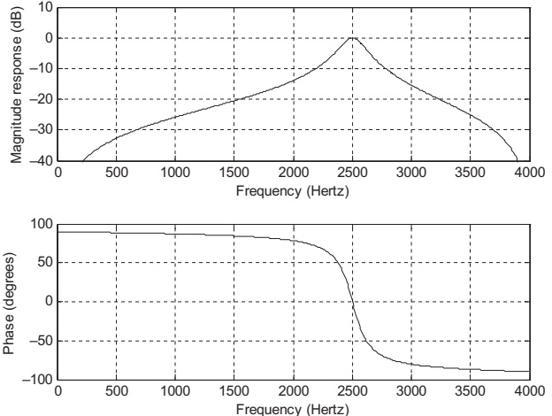
Example 8.12 – Bandstop Butterworth
Focus: - Adjusting center frequency and bandwidth so the bandstop has unity gain at \(\omega_0\) and meets passband / stopband widths. - Use LP→BS transformation and BLT.
End result (after some careful bandwidth tuning):
Use \(n=1\) (Butterworth).
Analog BS:
\[ H(s) = \frac{s^{2} + 5.7341\times10^{8}}{s^{2} + 4149s + 5.7341\times10^{8}} \]
Digital BS after BLT:
\[ H(z) = \frac{0.9259 + 0.7078 z^{-1} + 0.9259 z^{-2}} {1 + 0.7078 z^{-1} + 0.8518 z^{-2}} \]
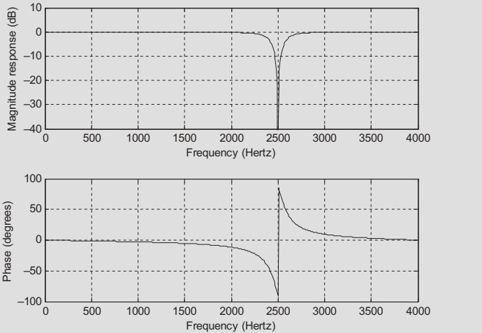
Example 8.13 – Bandpass Chebyshev
Specs:
- Center frequency 2.5 kHz.
- Passband bandwidth 200 Hz, 0.5 dB ripple.
- Stopband edges: 1.5 kHz and 3.5 kHz, 10 dB attenuation.
- \(f_s = 8000\) Hz.
Process:
Extensive prewarping and “unit‑gain at center frequency” adjustments, then:
Compute prototype \(\nu_s\) and order \(n\) using Chebyshev formula → \(n \approx 0.928 \Rightarrow 1\).
Prototype from Table 8.4 (0.5 dB, \(n=1\)):
\[ H_P(s) = \frac{2.8628}{s + 2.8628} \]
LP→BP and BLT yield:
\[ H(s) = \frac{1.1497\times 10^4 s}{s^{2} + 1.1497\times 10^4 s + 5.7341\times 10^8} \]
\[ H(z) = \frac{0.1815 - 0.1815z^{-2}}{1 + 0.6264z^{-1} + 0.6396z^{-2}} \]
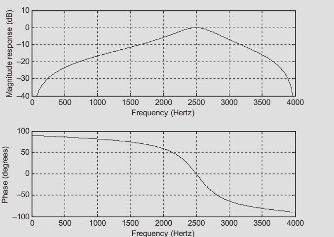
8.4 Higher‑Order IIR via Cascade Method
When order \(n\) is high (\(n \ge 3\)), direct‑form implementation of \(H(z)\):
- Is numerically sensitive (round‑off, coefficient quantization).
- Poles can move out of the unit circle → instability.
Solution: factor into cascaded second‑order sections (biquads).
- Each section has its own denominator \((1 + a_1 z^{-1} + a_2 z^{-2})\).
- Coefficients are better conditioned, easier to implement in hardware/embedded DSP.
Cascade Forms – Analog Prototypes
Tables 8.7–8.9 give factored lowpass prototypes.
Example: Table 8.7, 4th‑order Butterworth:
\[ H_P(s) = \frac{1}{(s^{2} + 0.7654s + 1)(s^{2} + 1.8478s + 1)} \]
Each quadratic factor → will map to one biquad in digital domain.
Chebyshev prototypes also have cascade forms (Tables 8.8, 8.9).
Example 8.14 – 4th‑Order Butterworth LP, Cascade
Specs:
- 4th‑order Butterworth LP.
- Cutoff 2.5 kHz.
- \(f_s = 8000\) Hz.
Example 8.14 – Steps
Prewarp:
\[ \omega_d = 2\pi(2500) = 5000\pi,\quad \omega_a \approx 2.3946\times 10^4\ \text{rad/s} \]
Use cascade prototype from Table 8.7:
\[ H_P(s) = \frac{1}{(s^{2} + 0.7654s + 1)(s^{2} + 1.8478s + 1)} \]
LP→LP for each factor:
First factor:
\[ H_{P1}(s) = \frac{1}{s^{2} + 0.7654s + 1} \Rightarrow H_1(s) = H_{P1}\left(\frac{s}{\omega_a}\right) \]
Second factor similarly: \(H_2(s)\).
Overall: \(H(s) = H_1(s) H_2(s)\).
Apply BLT to each factor:
\[ H_1(z) = \frac{0.5108 + 1.0215z^{-1} + 0.5108z^{-2}}{1 + 0.5654z^{-1} + 0.4776z^{-2}} \]
\[ H_2(z) = \frac{0.3730 + 0.7460z^{-1} + 0.3730z^{-2}}{1 + 0.4129z^{-1} + 0.0790z^{-2}} \]
Overall: \(H(z) = H_1(z)H_2(z)\).
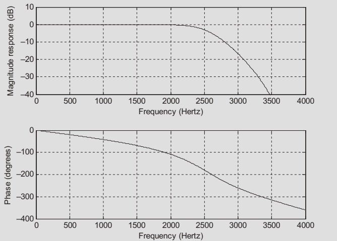
Why Cascades Are Better in Practice
Direct Form
- Single high‑order polynomial.
- Coefficient quantization can significantly alter pole locations.
- Hard to stabilize and tune.
Cascade of Biquads
- Each section 2nd‑order: \[ H_k(z) = \frac{b_{0k} + b_{1k}z^{-1} + b_{2k}z^{-2}}{1 + a_{1k}z^{-1} + a_{2k}z^{-2}} \]
- More robust to finite‑precision arithmetic.
- Easy to scale sections or change gain.
Note
Most real DSP chips (audio codecs, SDR front‑ends, etc.) include biquad building blocks specifically to implement IIR filters in cascade.
8.5 Application: Digital Audio Equalizer
A 7‑band digital audio equalizer:
- Sampling rate \(f_s = 44.1\) kHz (CD audio).
- Audio bandwidth ~22.05 kHz.
- Each band implemented by a second‑order bandpass Butterworth filter.
- Center frequencies and bandwidths in Table 8.10.
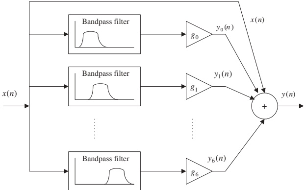
Audio Equalizer – Intuition
Think of it like a graphic equalizer on a stereo.
Each bandpass filter extracts a slice of the audio spectrum:
- Bass (100–400 Hz).
- Midrange (1 kHz–2.5 kHz).
- Treble (6 kHz–15 kHz).
Gains \(g_0, \dots, g_6\) let you boost or cut each band.
Tip
Real‑world analogy: adjusting bass and treble on your phone or car stereo is a coarse 2‑band version of this 7‑band equalizer.
Equalizer Specifications (Table 8.10)
| Center freq (Hz) | 100 | 200 | 400 | 1000 | 2500 | 6000 | 15000 |
|---|---|---|---|---|---|---|---|
| 3‑dB BW (Hz) | 50 | 100 | 200 | 500 | 1250 | 3000 | 7500 |
Each band uses a 2nd‑order BP Butterworth IIR designed via BLT.
Table 8.11 lists the numerator/denominator coefficients \((b_k, a_k)\) for each band:
Example (Band 0):
- Numerator: \([0.0031954934, 0, -0.0031954934]\)
- Denominator: \([1, -1.9934066716, 0.9936090132]\)
Equalizer Filter Bank Responses
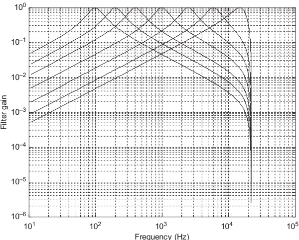
- Each curve is one bandpass filter’s gain vs frequency.
- Combined, they cover the audio band with overlapping magnitude responses.
Equalizer Operation
Input \(x(n)\) → each bandpass filter → \(y_k(n)\), then:
\[ y(n) = \left(\sum_{k=0}^{6} g_k y_k(n)\right) + x(n) \]
- The original signal is mixed back in (like a “dry + wet” mixing in audio).
- Gains \(g_k\) control emphasis per band.
Example gain setting:
\[ g_0 = 10,\ g_1 = 10,\ g_2 = g_3 = g_4 = 0,\ g_5 = 10,\ g_6 = 10 \]
→ “Smile” EQ curve: boost very low and very high frequencies by 20 dB (\(20\log_{10}10\)), leave mids mostly unchanged.
Test Signal and Spectra
Test signal (sum of 7 sinusoids at band centers):
\[ x(n) = \sin\left(\frac{200\pi n}{44100}\right) + \sin\left(\frac{400\pi n}{44100} + \frac{\pi}{14}\right) + \cdots + \sin\left(\frac{30000\pi n}{44100} + \frac{3\pi}{7}\right) \]
Simulation shows:
- Before equalization: spectral peaks equal at each center frequency.
- After equalization: peaks at 100, 200, 6000, 15000 Hz are boosted.
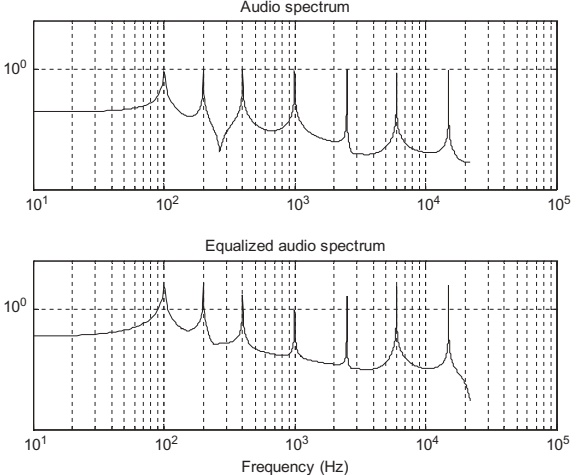
Summary / Key Points
- Lowpass prototypes (Butterworth & Chebyshev type I) are the starting point for many IIR designs.
- Filter order \(n\) is determined from \(A_p, A_s\) and normalized stopband frequency \(\nu_s\).
- Butterworth: flat passband, monotonic; Chebyshev: equiripple passband, steeper roll‑off for same order.
- Frequency transformations map LP prototypes to LP/HP/BP/BS analog filters.
- The bilinear transform (BLT) converts analog \(H(s)\) to digital \(H(z)\), with frequency prewarping correcting its nonlinearity.
- Higher‑order IIR filters are best implemented as cascades of biquads for numerical robustness.
- A multi‑band digital audio equalizer is a practical example of an IIR filter bank: each band is a 2nd‑order BP Butterworth IIR, gains adjust tonal balance.
Formula Summary
Butterworth magnitude (prototype):
\[ \left|H_P(\nu)\right| = \frac{1}{\sqrt{1 + \varepsilon^2 \nu^{2n}}} \]
Chebyshev magnitude (prototype):
\[ \left|H_P(\nu)\right| = \frac{1}{\sqrt{1 + \varepsilon^2 C_n^2(\nu)}} \]
\[ C_n(\nu) = \cosh\left[n\cosh^{-1}(\nu)\right],\quad \cosh^{-1}(x) = \ln\left(x + \sqrt{x^2 - 1}\right) \]
Ripple parameter from passband spec:
\[ \varepsilon^2 = 10^{0.1 A_p} - 1 \]
Butterworth order:
\[ n \ge \frac{\log_{10}\left(\dfrac{10^{0.1A_s} - 1}{\varepsilon^{2}}\right)} {2\log_{10}(\nu_s)} \]
Chebyshev order:
\[ n \ge \frac{\cosh^{-1}\left[\left(\dfrac{10^{0.1A_s} - 1}{\varepsilon^{2}}\right)^{0.5}\right]} {\cosh^{-1}(\nu_s)} \]
Prewarping (digital → analog):
\[ \omega_a = \frac{2}{T} \tan\left(\frac{\omega_d T}{2}\right) \]
Bilinear transform:
\[ s = \frac{2}{T}\,\frac{z - 1}{z + 1} \]
LP frequency transformations (analog domain):
- LP→LP (change cutoff): \(s \rightarrow \dfrac{s}{\omega_a}\)
- LP→HP: \(s \rightarrow \dfrac{\omega_a}{s}\)
- LP→BP: \(s \rightarrow \dfrac{s^2 + \omega_0^2}{W s}\)
- LP→BS: \(s \rightarrow \dfrac{W s}{s^2 + \omega_0^2}\)
8 IIR Filter Design – Interactive Deck
Interactive Deck
How to Use This Interactive Deck
- You can edit and run Python code directly in many slides.
- Code blocks tagged
{pyodide}run in your browser using Pyodide (Python in WebAssembly). - Some slides use Observable JS (OJS) + Pyodide + Plotly for reactive visualizations.
- Try changing parameters (e.g., \(A_p, A_s, n\)) and see how filter behavior changes immediately.
Tip
Click inside a code cell, modify values, then press the Run button (or use the keyboard shortcut if available) to re‑execute.
Warm‑up: dB and Linear Gain
Play with the basic conversion between dB and linear gain.
Computing the Butterworth Ripple Parameter ϵ
From the lecture:
\[ \varepsilon^{2} = 10^{0.1A_p} - 1 \]
Use this block to experiment with different passband ripples \(A_p\).
Try adding another \(A_p\) value (e.g., 0.1 dB) to the list and rerun.
Butterworth Order Calculator (Interactive)
Recall Butterworth order formula:
\[ n \ge \frac{\log_{10}\left(\dfrac{10^{0.1A_s} - 1}{\varepsilon^{2}}\right)} {2\log_{10}(\nu_s)},\quad \varepsilon^{2} = 10^{0.1A_p} - 1 \]
Use this interactive calculator to see how \(A_p, A_s, \nu_s\) affect the required order.
Task: Change Ap, As, and nu_s and see how the minimum integer order changes.
Reactive Butterworth Order Explorer
Use sliders (OJS) to control \(A_p\), \(A_s\), and \(\nu_s\), and get the order and a quick visualization of the transition region.
Chebyshev Order Calculator (Interactive)
Chebyshev order:
\[ n \ge \frac{\cosh^{-1}\left[\left(\dfrac{10^{0.1A_s}-1}{\varepsilon^{2}}\right)^{0.5}\right]} {\cosh^{-1}(\nu_s)},\quad \varepsilon^{2} = 10^{0.1A_p} - 1 \]
Try adjusting Ap, As, and nu_s and compare with Butterworth for same specs.
Butterworth vs Chebyshev Order – Reactive Comparison
Use sliders to compare required orders for the same specs.
Prewarping Digital Frequency to Analog
Prewarping formula:
\[ \omega_a = \frac{2}{T} \tan\left(\frac{\omega_d T}{2}\right), \quad T = \frac{1}{f_s},\ \omega_d = 2\pi f_d \]
Experiment with the prewarped analog cutoff for different sampling rates and digital cutoff frequencies.
Try adding other fs values (e.g., 16000, 48000) and see how \(\omega_a\) changes.
Visualizing Prewarping Nonlinearity
Plot mapping from digital frequency \(f_d\) to prewarped analog \(\omega_a\) for a given \(f_s\).
Observe how mapping becomes steeper near Nyquist (\(f_s/2\)).
Interactive: Example 8.7 Design in Python
Approximate Example 8.7 using Python tools for filter design (scipy‑like pattern, but we will only compute formulas here).
Change Ap or As and see whether an order of 1 is still enough.
Simple Butterworth Analog Prototype Plot (Magnitude Only)
Plot the normalized Butterworth magnitude response for a given order \(n\).
Experiment by changing n and Ap and rerun to see the effect on roll‑off and passband.
Chebyshev Prototype Magnitude Plot (Approximate)
Approximate Chebyshev type I magnitude using numpy.polynomial.chebyshev.chebval for \(|ν| \le 1\) and hyperbolic extension for \(|ν|>1\).
Try different n and Ap and compare with the Butterworth prototype slide.
Reactive: Try Your Own Lowpass Specs
Use sliders to specify a lowpass analog filter (already prewarped) and see normalized prototype stopband and required Butterworth order.
viewof omega_ap = Inputs.range([1000, 50000], {step: 1000, value: 5000, label: "Analog passband edge ω_ap (rad/s)"})
viewof omega_as = Inputs.range([2000, 100000], {step: 2000, value: 20000, label: "Analog stopband edge ω_as (rad/s)"})
viewof Ap_lp = Inputs.range([0.1, 3], {step: 0.1, value: 1, label: "Ap (dB)"})
viewof As_lp = Inputs.range([10, 60], {step: 5, value: 40, label: "As (dB)"})Interactive Audio Equalizer – Conceptual Numeric Play
We will not process full audio here, but we can explore gains per band and resulting total gain at each center frequency.
Center frequencies (Table 8.10):
- [100, 200, 400, 1000, 2500, 6000, 15000] Hz
viewof g0 = Inputs.range([0, 10], {step: 1, value: 10, label: "g0 (100 Hz)"})
viewof g1 = Inputs.range([0, 10], {step: 1, value: 10, label: "g1 (200 Hz)"})
viewof g2 = Inputs.range([0, 10], {step: 1, value: 0, label: "g2 (400 Hz)"})
viewof g3 = Inputs.range([0, 10], {step: 1, value: 0, label: "g3 (1 kHz)"})
viewof g4 = Inputs.range([0, 10], {step: 1, value: 0, label: "g4 (2.5 kHz)"})
viewof g5 = Inputs.range([0, 10], {step: 1, value: 10, label: "g5 (6 kHz)"})
viewof g6 = Inputs.range([0, 10], {step: 1, value: 10, label: "g6 (15 kHz)"})Try making your own EQ curve (e.g., mid‑boost, treble‑cut) and relate it to how music would sound.
Mini‑Challenge 1
Use any of the calculators above to design:
- A Butterworth LP with:
- \(A_p = 1\) dB, \(A_s = 40\) dB,
- \(\nu_s = 2.5\).
Then:
- Compute the order \(n\) with the Butterworth calculator.
- Design a Chebyshev type I with the same specs and compute its order.
- Which one has the lower order?
Use both:
- The simple order calculator slides.
- The comparison slide (Butterworth vs Chebyshev).
Mini‑Challenge 2 – Move from Specs to Prototype
Pick analog LP specs:
- \(\omega_{ap} = 10{,}000\ \text{rad/s}\),
- \(\omega_{as} = 30{,}000\ \text{rad/s}\),
- \(A_p = 1\) dB, \(A_s = 25\) dB.
Tasks:
- Use the “Try Your Own Lowpass Specs” slide to find \(\nu_s\) and Butterworth order \(n\).
- Change \(A_p\) from 1 dB → 0.1 dB and observe how \(n\) changes.
- Reflect: why does tightening passband ripple increase the required order?
Write your answers (and screenshots if possible) in your lab notebook.
Wrap‑Up: Key Takeaways from the Interactive Deck
You can now compute filter order for both Butterworth and Chebyshev I IIR filters from \((A_p, A_s, \nu_s)\).
You’ve seen how prewarping adjusts analog specs before BLT.
You used live Python code to:
- Implement the formulas for \(\varepsilon\), \(n\), and prewarped \(\omega_a\).
- Visualize magnitude responses of Butterworth and Chebyshev prototypes.
You explored how a multi‑band equalizer is essentially a bank of bandpass IIR filters plus gains.
Tip
Keep this deck open while doing homework: copy the formulas, tweak the code, and use it as a design sandbox.